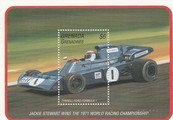
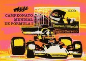
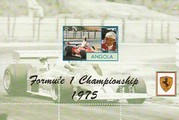

Formula 1 Seasons
Below is a list of all of the Formula 1 seasons in the decade; click on a year to see the cars and drivers featured on stamps for that specific Formula 1 season. Also listed are any specific events for the season featured on stamps in my collection and/or any stamps that feature the season in question. Click on an event or a championship winning driver name to see the stamps featuring that particular event or driver.
Below is a list of all of the Formula 1 seasons in the decade; click on a year to see the cars and drivers featured on stamps for that specific Formula 1 season. Also listed are any specific events for the season featured on stamps in my collection and/or any stamps that feature the season in question. Click on an event or a championship winning driver name to see the stamps featuring that particular event or driver.
1970
Lotus produced the new wedge shaped 72 - this was a very innovative car featuring torsion bar suspension, hip-mounted radiators, inboard front brakes and an overhanging rear wing. The 72 originally had suspension problems, but when anti-dive and anti-squat were designed out of the suspension the car quickly showed is superiority. Jochen Rindt dominated the championship until he was killed at Monza when a brake shaft broke; he won the drivers' championship posthumously for Lotus. Goodyear introduced slick tyres for the first time. Triple champion Jack Brabham retired at the end of the year.
Lotus produced the new wedge shaped 72 - this was a very innovative car featuring torsion bar suspension, hip-mounted radiators, inboard front brakes and an overhanging rear wing. The 72 originally had suspension problems, but when anti-dive and anti-squat were designed out of the suspension the car quickly showed is superiority. Jochen Rindt dominated the championship until he was killed at Monza when a brake shaft broke; he won the drivers' championship posthumously for Lotus. Goodyear introduced slick tyres for the first time. Triple champion Jack Brabham retired at the end of the year.
Constructor Title: Lotus |
Charity Souvenir Cover featuring the 1970 F1 Season  |
Motor racing featured at the Singapore Festival of Sports |
1970 Barcelona Grand Prix (Formula 2) |
1971
Lotus had a poor season, as their seats were occupied by young and inexperienced drivers following the death of Jochen Rindt. The team experimented with a gas turbine powered car, and with four wheel drive again. Two more drivers were killed whilst driving Formula 1 cars. The Belgian Grand Prix was scheduled for June (between the Monaco and Dutch Grand Prix) and was due to take place at the notorious 8.7 mile Spa-Francorchamps circuit. However, the track owners and authorities had failed to bring the circuit up to the mandatory level of safety, which meant that the circuit was deemed unsuitable for F1 cars to race on and the event was promptly cancelled.
Lotus had a poor season, as their seats were occupied by young and inexperienced drivers following the death of Jochen Rindt. The team experimented with a gas turbine powered car, and with four wheel drive again. Two more drivers were killed whilst driving Formula 1 cars. The Belgian Grand Prix was scheduled for June (between the Monaco and Dutch Grand Prix) and was due to take place at the notorious 8.7 mile Spa-Francorchamps circuit. However, the track owners and authorities had failed to bring the circuit up to the mandatory level of safety, which meant that the circuit was deemed unsuitable for F1 cars to race on and the event was promptly cancelled.
Constructor Title: Tyrrell |
Driver Title: Jackie Stewart |
Charity Souvenir Cover featuring the 1971 F1 Season |
Jackie Stewart 1971 World Champion |
1972
Lotus returned to the successful 72 chassis, and the cars were fielded with the new black and gold livery - the 'JPS' cars. Lotus won back championship with 25-year old Brazilian driver Emerson Fittipaldi who became the youngest world champion at that point. The British Racing Motors (BRM) team took its last victory at the rain-affected 1972 Monaco Grand Prix in a BRM P160. It was the turn of the Dutch Grand Prix to be cancelled, as the necessary safety arrangements had not been completed at the Zandvoort circuit.
Lotus returned to the successful 72 chassis, and the cars were fielded with the new black and gold livery - the 'JPS' cars. Lotus won back championship with 25-year old Brazilian driver Emerson Fittipaldi who became the youngest world champion at that point. The British Racing Motors (BRM) team took its last victory at the rain-affected 1972 Monaco Grand Prix in a BRM P160. It was the turn of the Dutch Grand Prix to be cancelled, as the necessary safety arrangements had not been completed at the Zandvoort circuit.
Constructor Title: Lotus |
Emerson Fittipaldi - World Champion 1972 |
Charity Souvenir Cover featuring the 1972 F1 Season  |
1973
The most popular engine continued to be the Ford-Cosworth DFV 3 litre V8 and was used by most of the grid. Jackie Stewart was joined at Tyrrell by Francois Cevert - Stewart took the driver's title and Tyrrell were looking good for the constructor's title. But then at the final race, Cevert crashed during Saturday practice in the notorious 'Esses' and was killed instantly. Stewart and Tyrrell withdrew from the race, handing the constructor's title to Lotus. At the end of the season Stewart made public his decision to retire, a decision that was already made before that disastrous race. The new McLaren M23, a wedge-shaped car following the same concept as the Lotus 72 but with more conventional suspension and up to date aerodynamics, was the car to beat at the end of the season.
The most popular engine continued to be the Ford-Cosworth DFV 3 litre V8 and was used by most of the grid. Jackie Stewart was joined at Tyrrell by Francois Cevert - Stewart took the driver's title and Tyrrell were looking good for the constructor's title. But then at the final race, Cevert crashed during Saturday practice in the notorious 'Esses' and was killed instantly. Stewart and Tyrrell withdrew from the race, handing the constructor's title to Lotus. At the end of the season Stewart made public his decision to retire, a decision that was already made before that disastrous race. The new McLaren M23, a wedge-shaped car following the same concept as the Lotus 72 but with more conventional suspension and up to date aerodynamics, was the car to beat at the end of the season.
Constructor Title: Lotus |
Driver Title: Jackie Stewart |
Charity Souvenir Cover featuring the 1973 F1 Season  |
1974
No one team dominated as there were seven different race winners. Graham Hill entered his own team running Lola cars. The Hesketh team entered its own car, after running James Hunt in a March. The Americans Roger Penske and Parnelli Jones entered their own cars late in the season. Two drivers were killed at the wheel of F1 cars over the course of the season. This was the first season for which the drivers had permanent racing numbers for each race; the system had been introduced in the middle of the previous season.
No one team dominated as there were seven different race winners. Graham Hill entered his own team running Lola cars. The Hesketh team entered its own car, after running James Hunt in a March. The Americans Roger Penske and Parnelli Jones entered their own cars late in the season. Two drivers were killed at the wheel of F1 cars over the course of the season. This was the first season for which the drivers had permanent racing numbers for each race; the system had been introduced in the middle of the previous season.
Constructor Title: McLaren |

Charity Souvenir Cover featuring the 1974 F1 Season  |
1975
The Brabham team finished the previous season with some good results, so they were considered the favourites for the 1975 season. But after a good start, the cars faded due to high tyre wear. Niki Lauda often refers to 1975 as ""the unbelievable year"" - this was his second year with Ferrari. The 1975 Ferrari, the 312T, was techncally far superior to any of the competition. Lauda won his first world title with five wins and a huge margin over second place in the championship.
The Brabham team finished the previous season with some good results, so they were considered the favourites for the 1975 season. But after a good start, the cars faded due to high tyre wear. Niki Lauda often refers to 1975 as ""the unbelievable year"" - this was his second year with Ferrari. The 1975 Ferrari, the 312T, was techncally far superior to any of the competition. Lauda won his first world title with five wins and a huge margin over second place in the championship.
Constructor Title: Ferrari |

Ferrari Formula 1 World Champions 1975 - Niki Lauda |
Charity Souvenir Cover featuring the 1975 F1 Season  |
1975 Spanish Grand Prix |
1976
James Hunt won the driver's championship by one point from Niki Lauda in a season which was highly political. It started in Spain - Hunt was disqualified from first place, giving the race to Lauda, but the decision was overturned at an appeal a few months later. Hunt won in Britain, but he had used the spare car after a first lap pile up, which against the rules. Ferrari appealed and Hunt was disqualified, giving the win to Lauda. Tyrrell entered the six-wheel car - the car won the Swedish Grand Prix. Lauda crashed heavily in Germany and suffered severe injuries, amazingly he was racing again in just six weeks. At the final race of the season, Lauda retired due to the hazardous conditions - Hunt's third place was enough to secure him the title. Frank Williams left Walter Wolf Racing to set up Williams Grand Prix Engineering Ltd.
James Hunt won the driver's championship by one point from Niki Lauda in a season which was highly political. It started in Spain - Hunt was disqualified from first place, giving the race to Lauda, but the decision was overturned at an appeal a few months later. Hunt won in Britain, but he had used the spare car after a first lap pile up, which against the rules. Ferrari appealed and Hunt was disqualified, giving the win to Lauda. Tyrrell entered the six-wheel car - the car won the Swedish Grand Prix. Lauda crashed heavily in Germany and suffered severe injuries, amazingly he was racing again in just six weeks. At the final race of the season, Lauda retired due to the hazardous conditions - Hunt's third place was enough to secure him the title. Frank Williams left Walter Wolf Racing to set up Williams Grand Prix Engineering Ltd.
Constructor Title: Ferrari |

Charity Souvenir Cover featuring the 1976 F1 Season |
1977
Renault entered Grand Prix racing with a turbo charged car, but this was initially not very successful. The South Afrcan Grand Prix was the last race that a BRM qualified to start. The Shadow team took its only race win and Jody Scheckter's Wolf won the first time out. The season was also marred by one of the most horrific accidents in F1 history. At the South African Grand Prix, Tom Pryce, in a Shadow, was unable to avoid a 19-year-old race marshal. The latter was killed by the terrifying collision, his bloody corpse was hurtled into the air, and his fire extinguisher killed and nearly decapitated Pryce, whose car proceeded to the end of the straight where it collided with Jacques Laffite's Ligier. The race was continued, Lauda secured his first win since his own accident the previous season.
Renault entered Grand Prix racing with a turbo charged car, but this was initially not very successful. The South Afrcan Grand Prix was the last race that a BRM qualified to start. The Shadow team took its only race win and Jody Scheckter's Wolf won the first time out. The season was also marred by one of the most horrific accidents in F1 history. At the South African Grand Prix, Tom Pryce, in a Shadow, was unable to avoid a 19-year-old race marshal. The latter was killed by the terrifying collision, his bloody corpse was hurtled into the air, and his fire extinguisher killed and nearly decapitated Pryce, whose car proceeded to the end of the straight where it collided with Jacques Laffite's Ligier. The race was continued, Lauda secured his first win since his own accident the previous season.
Constructor Title: Ferrari |
Driver Title: Niki Lauda |
Ferrari Formula 1 World Champions 1977 - Niki Lauda |
Charity Souvenir Cover featuring the 1977 F1 Season  |
48th Italian Grand Prix  |
1978
Mario Andretti, to date, is the last American to win a Formula 1 race and the title. There was one non-Championship race in 1978, the XXX BRDC International Trophy at Silverstone, the last time that this formerly famous event was run to F1 rules. The race was won by future Champion Keke Rosberg, driving in only his second ever Formula 1 event. Ronnie Peterson, the ""Super Swede"", who was classified as second in the driver rankings, was killed in a first lap accident at Monza.
Mario Andretti, to date, is the last American to win a Formula 1 race and the title. There was one non-Championship race in 1978, the XXX BRDC International Trophy at Silverstone, the last time that this formerly famous event was run to F1 rules. The race was won by future Champion Keke Rosberg, driving in only his second ever Formula 1 event. Ronnie Peterson, the ""Super Swede"", who was classified as second in the driver rankings, was killed in a first lap accident at Monza.
Constructor Title: Lotus |

Charity Souvenir Cover featuring the 1978 F1 Season  |
1979
The Lotus type 79 'wing car' had given the team a great advantage in aerodynamic grip in the previous season. But by the start of 1979, many of the teams had incorporated the technology into their own cars. At the opening rounds of the season Ligier appeared to have been the most successful with the technology. But in round 3, Ferrari showed its hand with the 312T4, winning first time out. Both James Hunt and Niki Lauda retired from the sport during the season.
The Lotus type 79 'wing car' had given the team a great advantage in aerodynamic grip in the previous season. But by the start of 1979, many of the teams had incorporated the technology into their own cars. At the opening rounds of the season Ligier appeared to have been the most successful with the technology. But in round 3, Ferrari showed its hand with the 312T4, winning first time out. Both James Hunt and Niki Lauda retired from the sport during the season.
Constructor Title: Ferrari |

Ferrari Formula 1 World Champions 1979 - Jody Scheckter |
Charity Souvenir Cover featuring the 1979 F1 Season  |